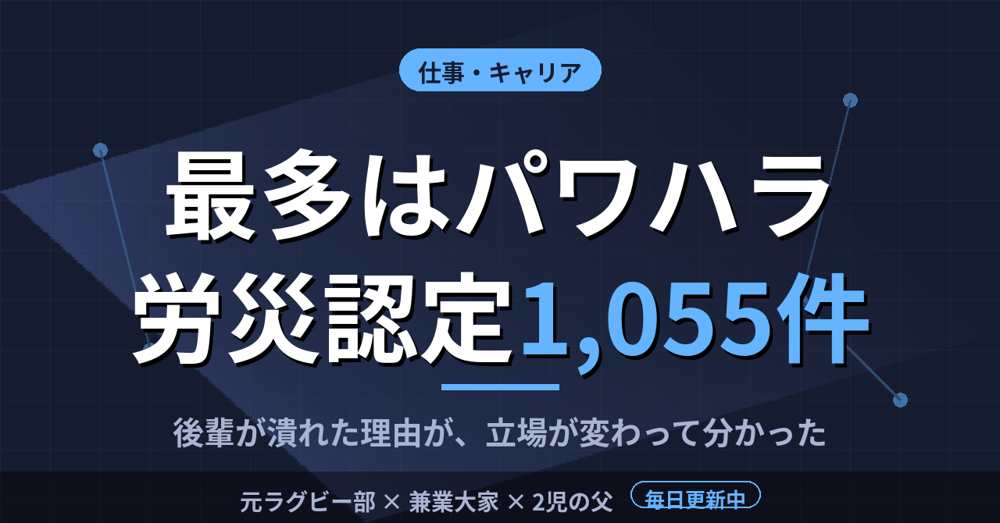
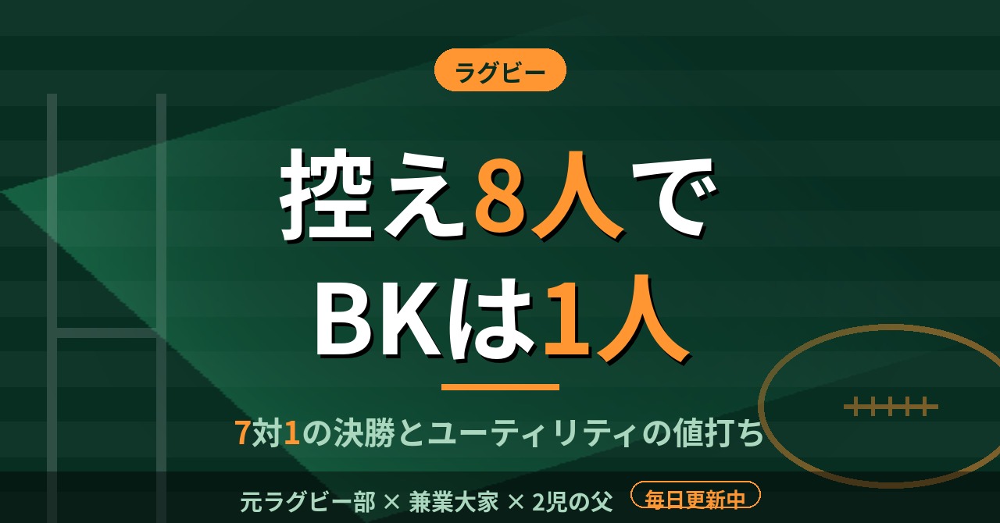
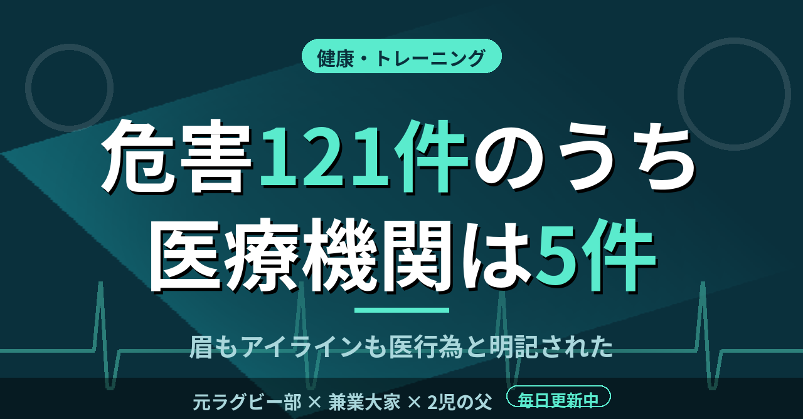

hohemaro15
ラグビー20年、不動産1棟。調べてから書く記録
このサイトについて
小学5年でラグビーを始めて、大学まで20年続けた。大阪の激戦区で6年、同志社大で4年。ポジションはユーティリティバックス。
今はメーカーで設備の電気を担当しながら、兵庫県尼崎市に木造9戸の一棟アパートを運用している。2児の父。
経験談だけで終わらせないために、書く前に必ず制度と統計を調べることにしている。数字が確認できなかった話は書かない。
書いていること
ラグビー
小5から大学まで20年。大阪の激戦区で見たこと、カテゴリが上がるたびに起きたこと。
不動産・資産運用
2016年に検討を始めて2026年に1棟目。判断基準と、断り続けた10年の話。
健康・トレーニング
増量の失敗と成功、サプリで肝臓の数値を悪くした経験、続けている設計。
子育て・家族
2歳と0歳を育てながらの時間の使い方と、資産形成の時間軸。
最近の記事
-

仕事・キャリア精神障害の労災は1,055件、最多はパワハラ。後輩が潰れた理由が育休明けに分かった
新人がたくさん入ってきた時期、僕は後輩の面倒を見るのが楽しかった。ところが数年のうちに、その後輩の大半がいなくなった。適応障害と診断されて休んだ人もいれば、異動で離れた人もいる。…
-

ラグビー控え8人のうちBKは1人。ユーティリティを選んだ元BKが7対1の決勝を見た
高校のとき、僕はポジションを固定しなかった。10番も、12番も13番もやる。パスもキックもランもそこそこできる「ユーティリティバックス」として試合に出ていた。監督とも話したが、最終的にそう決めたのは自分だった。…
-
 不動産・資産運用
不動産・資産運用
投資用不動産への融資は2017年3月期がピーク。2棟目を「半年空けて」と言われた
1棟目の融資が実行されたのは2026年3月だ。2棟目の話を始めると、「前の物件から半年は空けてほしい」と言われた。急いでいたわけではないが、なぜ半年なのかは気になった。…
-
 子育て・家族
子育て・家族
チャイルドシート使用率は84.0％、5歳だけは65.7％。2台を並べる父が読んだ
車の後部座席には、チャイルドシートが2台並んでいる。2歳と0歳を乗せるたびにベルトを締め直すのは手間で、近所のスーパーまでなら抱っこでいいかと思う瞬間がないとは言わない。警察庁とJAFの最新の調査を読んで、その「近所だか…
-

健康・トレーニングアートメイクの危害121件、医療機関は5件だけ。眉を入れて3年の僕が読んだ
眉のアートメイクを始めて3年くらいになる。価格を比べて、1回2万円前後で続けてきた。大学までは見た目にまったく気を使わなかった僕が、社会人になって評価を上げたいと考えて手をつけたものの一つだ。続けるうちに、これは法律上ど…
-
 不動産・資産運用
不動産・資産運用
不動産取得税は1戸1,200万円の控除。ただし中古は自分が住む家だけだった
2棟目の諸費用を組み直していて、不動産取得税の欄で手が止まった。1棟目は中古、2棟目は新築を中心に探している。同じ「住宅」でも控除の扱いがまるで違うことを、県の案内を読んで初めて知った。…